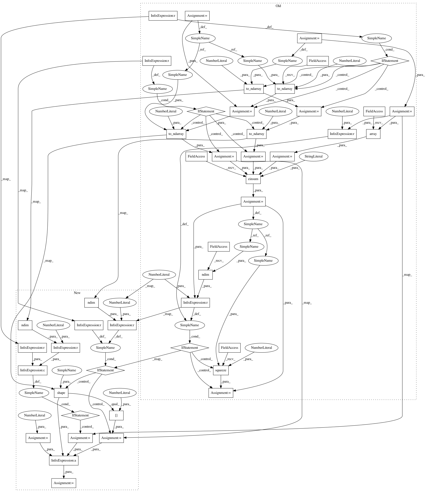

ac8218b204a2c8a972f8f2410a3cc150a4ef3afc,geomstats/learning/frechet_mean.py,,variance,#Any#Any#Any#Any#Any#,19
Before Change
weights : array-like, shape=[n_samples, 1], optional
n_points = gs.shape(points)[0]
if weights is None:
weights = gs.ones((n_points,))
weights = gs.array(weights)
sum_weights = gs.sum(weights)
if point_type == "vector":
points = gs.to_ndarray(points, to_ndim=2)
base_point = gs.to_ndarray(base_point, to_ndim=2)
// weights = gs.to_ndarray(weights, to_ndim=2, axis=1)
if point_type == "matrix":
points = gs.to_ndarray(points, to_ndim=3)
base_point = gs.to_ndarray(base_point, to_ndim=3)
// weights = gs.to_ndarray(weights, to_ndim=3, axis=1)
// weights = weights[:, :, 0]
sq_dists = metric.squared_dist(base_point, points)
var = gs.einsum("...,...->...", weights, sq_dists)
var = gs.sum(var)
var /= sum_weights
if n_points == 1 and gs.ndim(var) > 0:
var = gs.squeeze(var, axis=0)
return var
def linear_mean(points, weights=None):
After Change
weights : array-like, shape=[n_samples, 1], optional
n_points = 1
if point_type == "vector" and gs.ndim(points) == 2:
n_points = gs.shape(points)[0]
if point_type == "matrix" and gs.ndim(points) == 3:
n_points = gs.shape(points)[0]
if weights is None:
weights = gs.ones((n_points,))
sum_weights = gs.sum(weights)
sq_dists = metric.squared_dist(base_point, points)
var = weights * sq_dists
var = gs.sum(var)
var /= sum_weights
In pattern: SUPERPATTERN
Frequency: 3
Non-data size: 46
Instances
Project Name: geomstats/geomstats
Commit Name: ac8218b204a2c8a972f8f2410a3cc150a4ef3afc
Time: 2020-04-17
Author: ninamio78@gmail.com
File Name: geomstats/learning/frechet_mean.py
Class Name:
Method Name: variance
Project Name: geomstats/geomstats
Commit Name: d3a6aad21613e44b173ec1b4cf5a404a5c88d4cd
Time: 2020-04-16
Author: ninamio78@gmail.com
File Name: geomstats/learning/frechet_mean.py
Class Name:
Method Name: variance
Project Name: geomstats/geomstats
Commit Name: ac8218b204a2c8a972f8f2410a3cc150a4ef3afc
Time: 2020-04-17
Author: ninamio78@gmail.com
File Name: geomstats/learning/frechet_mean.py
Class Name:
Method Name: variance
Project Name: geomstats/geomstats
Commit Name: 64813750ad85154bbb04b50cbbb3f68e4313a2a5
Time: 2020-04-17
Author: ninamio78@gmail.com
File Name: geomstats/learning/frechet_mean.py
Class Name:
Method Name: variance